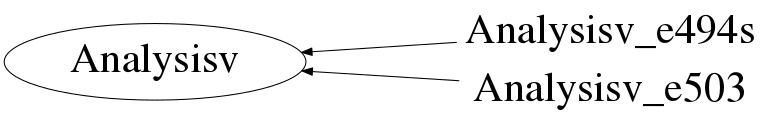

Function Members (Methods)
This is an abstract class, constructors will not be documented.
Look at the header to check for available constructors.
public:
| virtual | ~Analysisv() |
| static TClass* | Class() |
| virtual void | CloseInputTree(const char* inTreeName) |
| virtual void | CloseOutputTree(const char* outTreeName) |
| virtual void | CreateHistograms() |
| virtual void | FillHistograms() |
| virtual void | inAttach() |
| virtual TClass* | IsA() const |
| static Analysisv* | NewAnalyser(const Char_t* dataset, LogFile* Log) |
| virtual void | OpenInputTree(TTree*) |
| virtual void | OpenOutputTree(TTree*) |
| Analysisv& | operator=(const Analysisv&) |
| virtual void | outAttach() |
| virtual void | SetCsI(KVMaterial* ccsi) |
| virtual void | SetDC1(KVDetector* dcv1) |
| virtual void | SetDC2(KVDetector* dcv2) |
| virtual void | SetFileCut(TList* list) |
| virtual void | SetFileCutChioSi(TList* list2) |
| virtual void | SetGap1(KVMaterial* isogap1) |
| virtual void | SetGap2(KVMaterial* isogap2) |
| virtual void | SetIC(KVDetector* ic) |
| virtual void | SetSed(KVMaterial* sed) |
| virtual void | SetSi(KVMaterial* si) |
| virtual void | SetTarget(KVTarget* tgt) |
| virtual void | SetTel1(KVDetector* si) |
| virtual void | SetTel2(KVDetector* gap) |
| virtual void | SetTel3(KVDetector* csi) |
| virtual void | ShowMembers(TMemberInspector&) |
| virtual void | Streamer(TBuffer&) |
| void | StreamerNVirtual(TBuffer& ClassDef_StreamerNVirtual_b) |
| virtual void | Treat() |
Class Charts
{kind=link}
{kind=link}
{kind=link}
{kind=link}

Function documentation
void OpenInputTree(TTree* )
void CloseInputTree(const char* inTreeName)
void OpenOutputTree(TTree* )
void CloseOutputTree(const char* outTreeName)
Analysisv* NewAnalyser(const Char_t* dataset, LogFile* Log)
Static function which will create and 'Build' the Analysisv object for the datatset. These are defined as 'Plugin' objects in the file $KVROOT/KVFiles/.kvrootrc : Plugin.Analysisv: INDRA_e503 Analysisv_e503 VAMOS "Analysisv_e503(LogFile*)" +Plugin.Analysisv: INDRA_e494s Analysisv_e494s VAMOS "Analysisv_e494s(LogFile*)"
void inAttach()
void outAttach()
void Treat()
void CreateHistograms()
void FillHistograms()
void SetTel1(KVDetector* si)
void SetTel2(KVDetector* gap)
void SetTel3(KVDetector* csi)
void SetDC1(KVDetector* dcv1)
void SetSed(KVMaterial* sed)
void SetDC2(KVDetector* dcv2)
void SetIC(KVDetector* ic)
void SetGap1(KVMaterial* isogap1)
void SetSi(KVMaterial* si)
void SetGap2(KVMaterial* isogap2)
void SetCsI(KVMaterial* ccsi)
void SetFileCut(TList* list)
void SetFileCutChioSi(TList* list2)